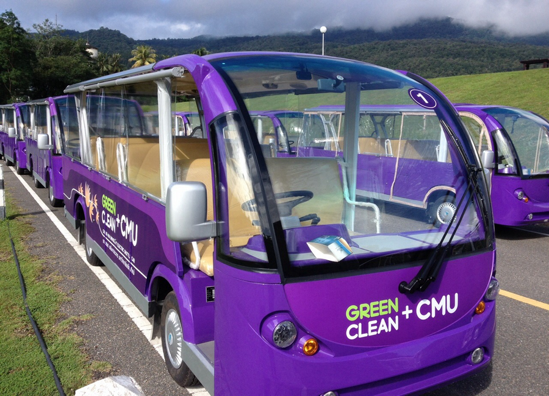
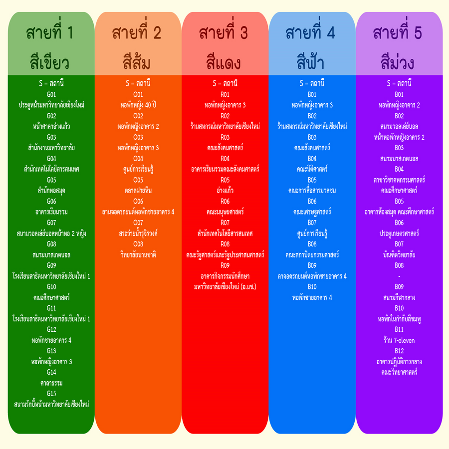

รถม่วงมช. (ขส.มช.)
มหาวิทยาลัยเชียงใหม่ ได้จัดระบบขนส่งมวลชนมหาวิทยาลัยเชียงใหม่ (ขส.มช.) โดยให้บริการด้วยรถไฟฟ้าภายในมหาวิทยาลัยฝั่งเชิงดอย เพื่อให้บริการ ขส.มช. ที่มีประสิทธิภาพ อีกทั้งยังเป็นการส่งเสริมให้นักศึกษา และบุคลากรของมหาวิทยาลัยได้ใช้รถร่วมกันในการเดินทาง ซึ่งเป็นการใช้พลังงานได้อย่างประหยัด มีประสิทธิภาพ และรักษาสภาพแวดล้อมของมหาวิทยาลัย และลดปริมาณการใช้ยานยนต์ส่วนตัวของนักศึกษารวมถึงบุคลากร ซึ่งจะส่งผลต่อการลดปัญหาด้านการจราจร การจอดรถ สภาพแวดล้อมตั้งแต่วันที่ 1 ตุลาคม 2557 เป็นต้นไป มหาวิทยาลัยเชียงใหม่ ได้มีการเปลี่ยนแปลงเส้นทางการเดินรถไฟฟ้าภายในมหาวิทยาลัยฝั่งเชิงดอย โดยจะให้บริการพื้นที่ภายในมหาวิทยาลัยเชียงใหม่ ฝั่งเชิงดอยทุกวัน ไม่เว้นวันหยุด ตั้งแต่เวลา 07.00 21.00 น
สาย 1 สีเขียว
เริ่มที่สถานีประตูหน้า มช. - ศาลาอ่างแก้ว - สำนักงานมหาวิทยาลัย - สำนักเทคโนโลยีสารสนเทศ - วงเวียนคณะมนุษยศาสตร์ - สำนักหอสมุด - อาคารเรียนรวม - สนามวอลเล่ย์บอลหน้าหอ 2 หญิง - สนามบาสเกตบอล - โรงเรียนสาธิตมหาวิทยาลัยเชียงใหม่ 1 - คณะศึกษาศาสตร์ - โรงเรียนสาธิตมหาวิทยาลัยเชียงใหม่ 1 - หอพักชายอาคาร 4 - หอพักหญิงอาคาร 3 - ศาลาธรรม - สนามรักบี้หน้ามหาวิทยาลัยเชียงใหม่
สาย 2 สีส้ม
เริ่มที่หอพักหญิง 40 ปี - หอพักหญิงอาคาร 2 - หอพักหญิงอาคาร 3 - ศูนย์การเรียนรู้ - ตลาดฝายหิน ลานจอดรถยนต์หอพักชายอาคาร 4 - สระว่ายน้ำรุจิรวงศ์ - วิทยาลัยนานาชาติ
สาย 3 สีแดง
เริ่มที่หอพักหญิงอาคาร3 - ร้านสหกรณ์มหาวิทยาลัยเชียงใหม่ - คณะสังคมศาสตร์ - อาคารเรียนรวมคณะสังคมศาสตร์ - อ่างแก้ว - คณะมนุษยศาสตร์ - สำนักเทคโนโลยีสารสนเทศ - คณะรัฐศาสตร์และรัฐประศาสนศาสตร์ อาคารกิจกรรมนักศึกษามหาวิทยาลัยเชียงใหม่ (อ.มช.)
สาย 4 สีฟ้า
เริ่มที่หอพักหญิงอาคาร3 ร้านสหกรณ์มหาวิทยาลัยเชียงใหม่ คณะสังคมศาสตร์ คณะนิติศาสตร์ คณะการสื่อสารมวลชน คณะเศรษฐศาสตร์ ศูนย์การเรียนรู้ คณะสถาปัตยกรรมศาสตร์ ลานจอดรถยนต์หอพักชายอาคาร4 หอพักชายอาคาร4
สาย 5 สีม่วง
เริ่มที่หอพักหญิงอาคาร2 สนามวอลเล่ย์บอลหน้าหอพักหญิงอาคาร2 สนามบาสเกตบอล สาขาวิชาคหกรรมศาสตร์ คณะศึกษาศาสตร์ อาคารห้องสมุดคณะศึกษาศาสตร์ ประตูเกษตรศาสตร์ บัณฑิตวิทยาลัย สนามกีฬากลาง หอพักในกำกับสีชมพู ร้าน 7-eleven อาคารปฏิบัติการกลางคณะวิทยาศาสตร์



